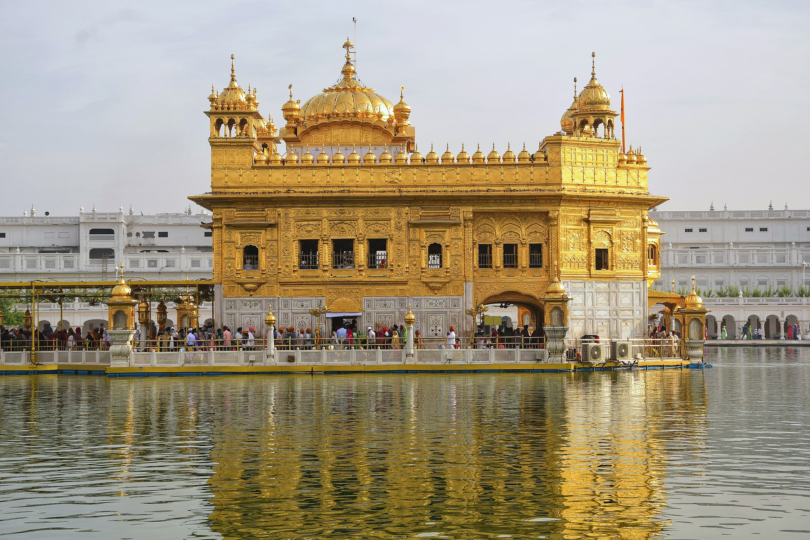
Golden Temple
Amritsar, Punjab
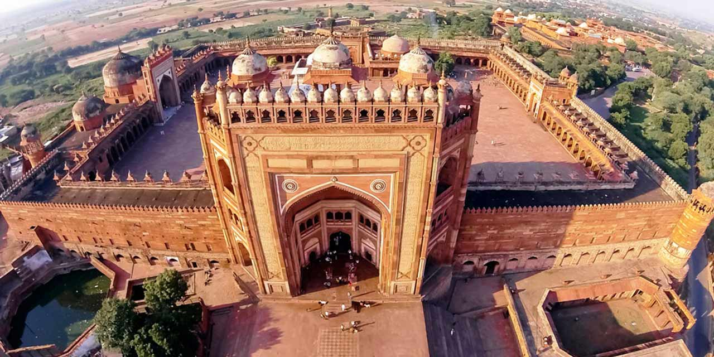
Fatehpur Sikri
Kurauli, Uttar Pradesh
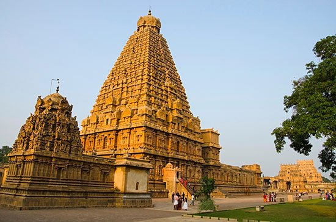
Brihadishvara Temple
Sahibzada Ajit Singh Nagar, Punjab

Konark Sun Temple
Odisha
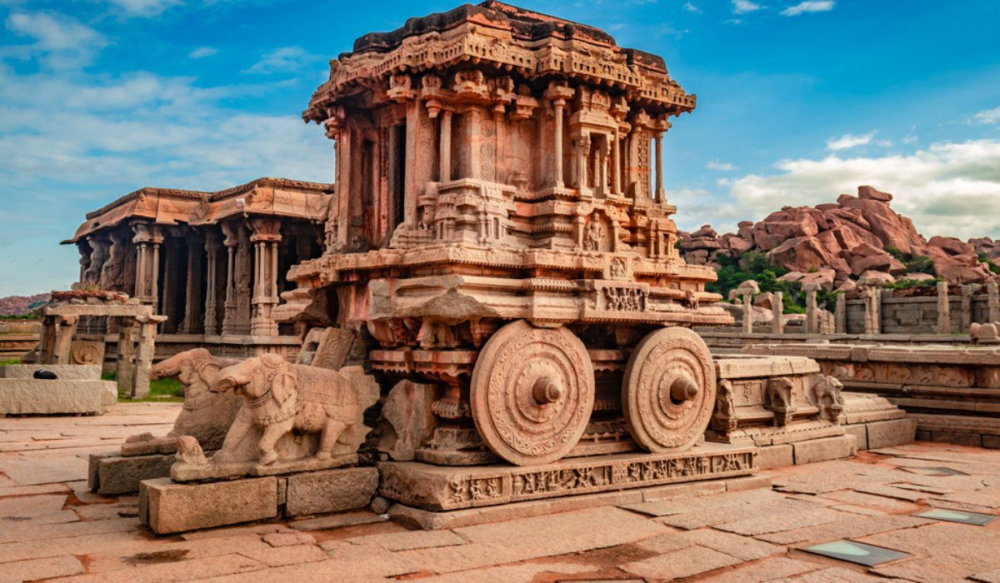
Hampi
Hospet, Karnataka
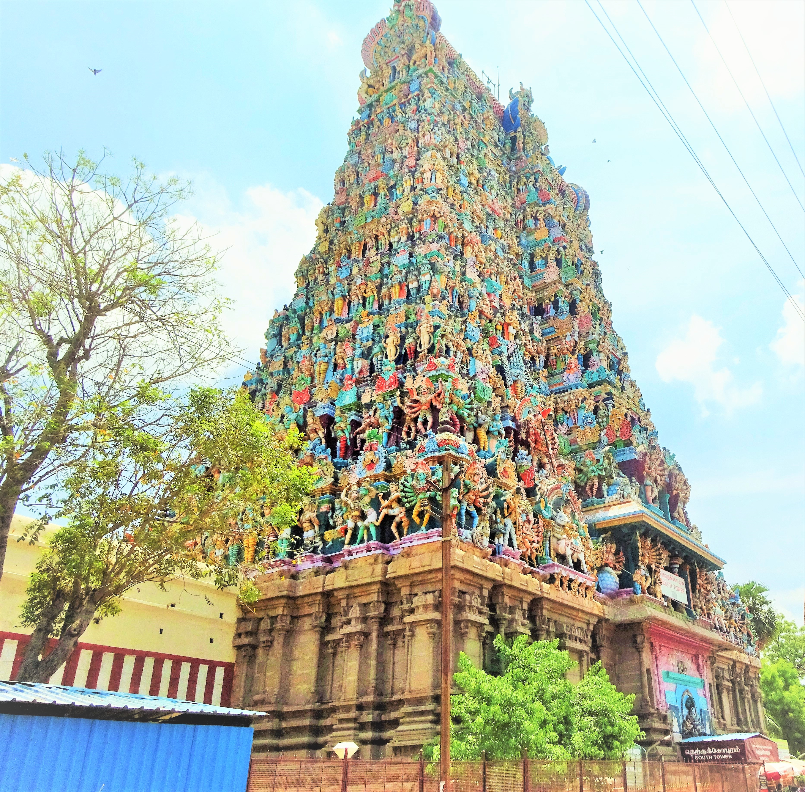
Meenakshi Temple
Madurai, Tamil nadu
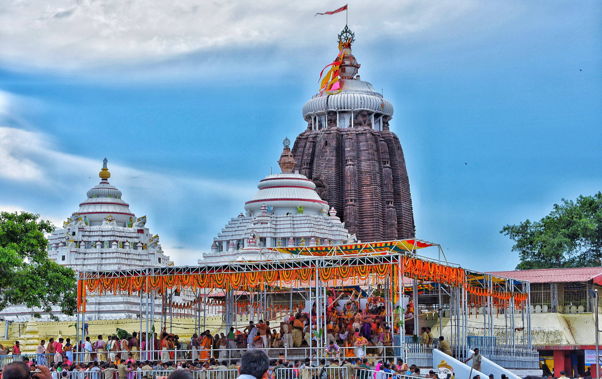
Jagannath Temple
Odisha
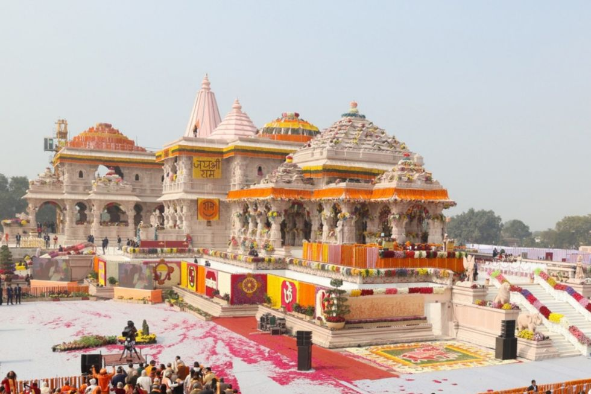
Ram Mandir
Ayodha, Uttar Pradesh
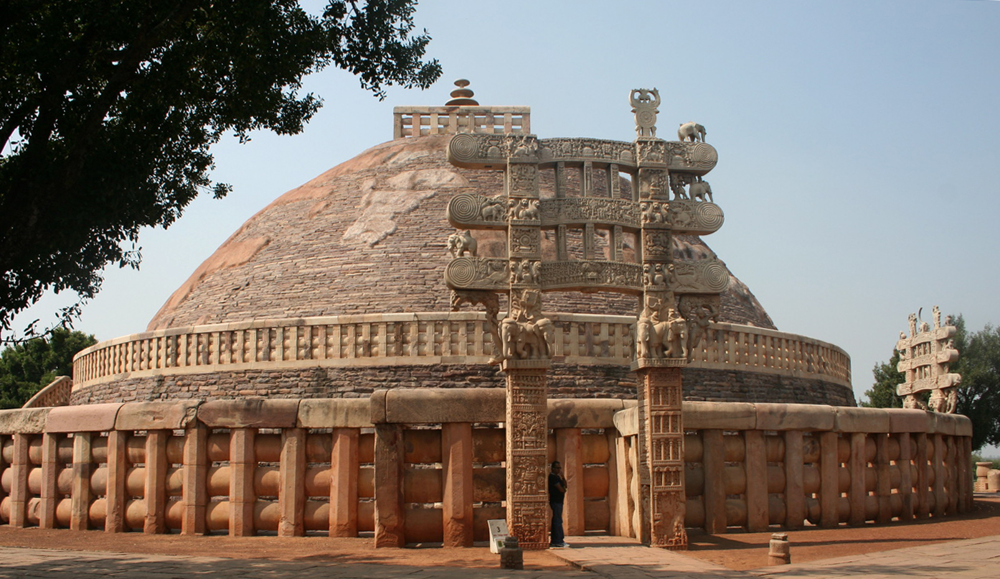
Sanchi Stupa
Sanchi town, Raisen District, Madhya Pradesh
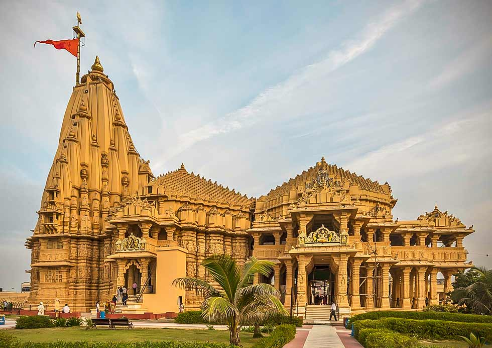
Somnath Temple
Prabhas Patan, Gujarat
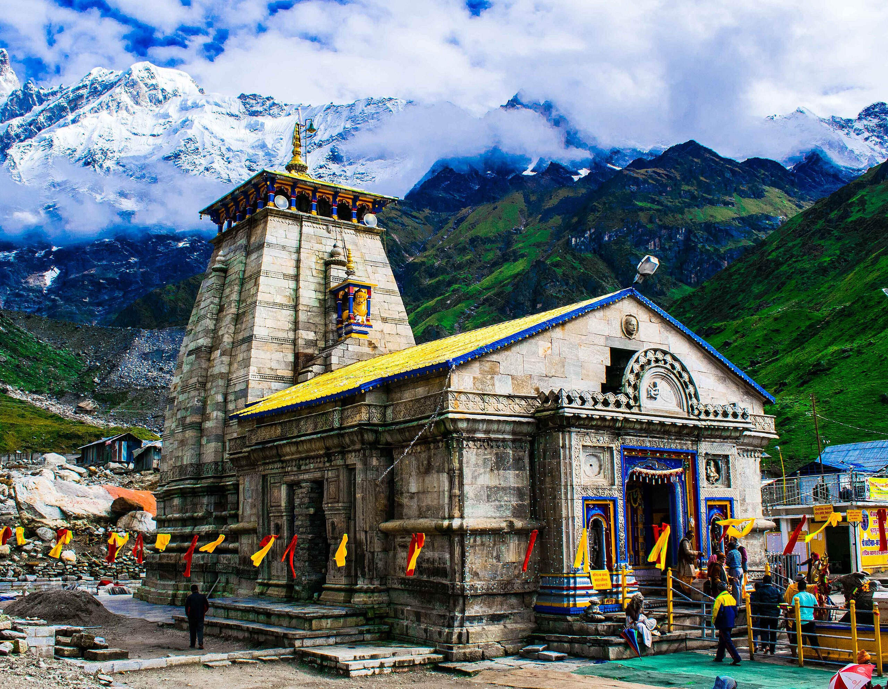
Kedarnath Temple
Kedarnath, Rudraprayag, Uttarakhand
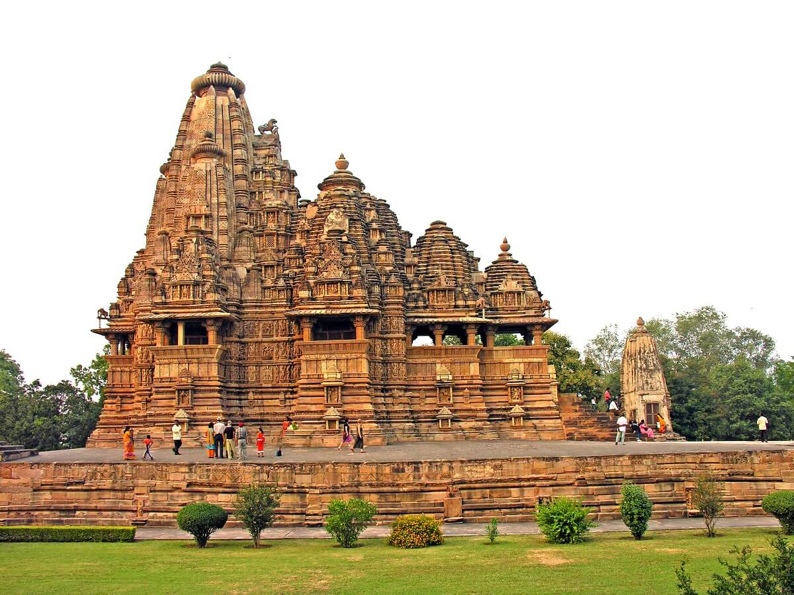
Kandariya Mahadeva Temple
Khajuraho, Chhatarpur district, Madhya Pradesh
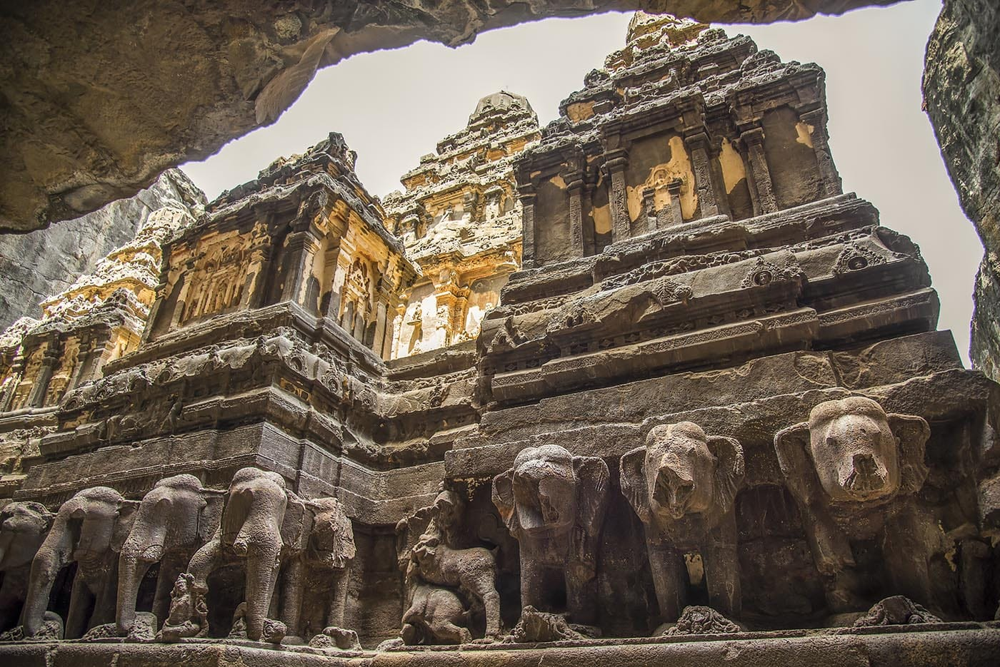
Ellora Caves
Maharashtra
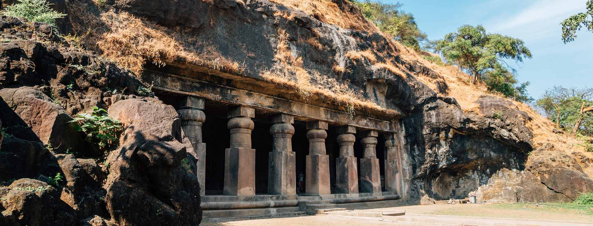
Elephanta Caves
Maharashtra
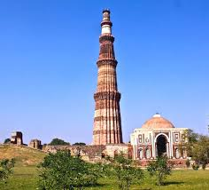
Qutub Minar
Mehrauli, South Delhi, Delhi
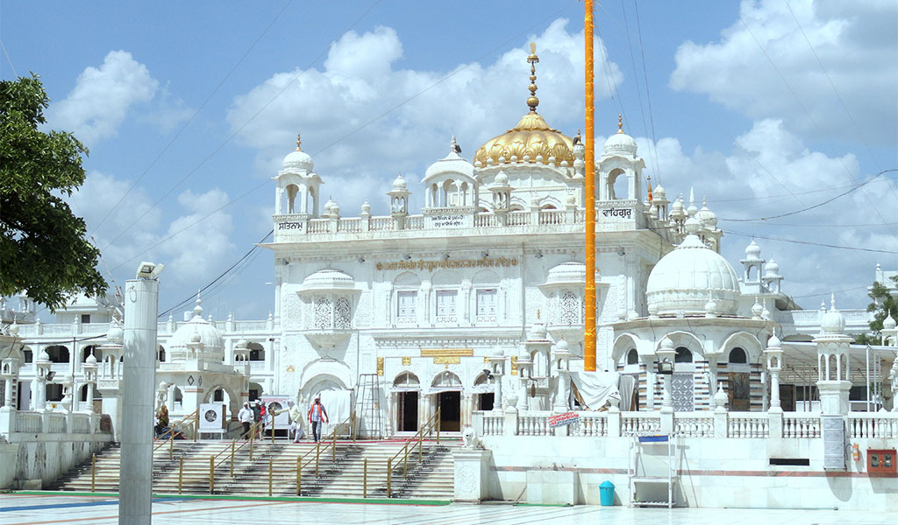
Takht Sachkhand Sri Hazur Abchalnagar Sahib
Nanded, Maharashtra